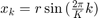
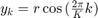
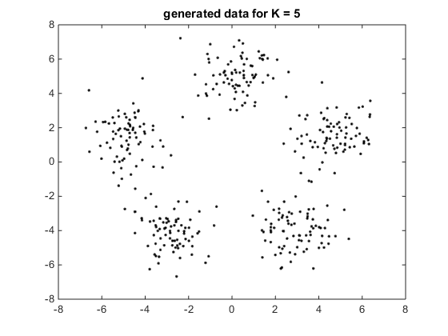
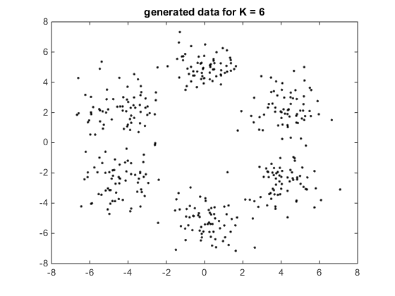
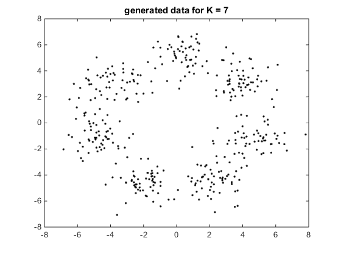
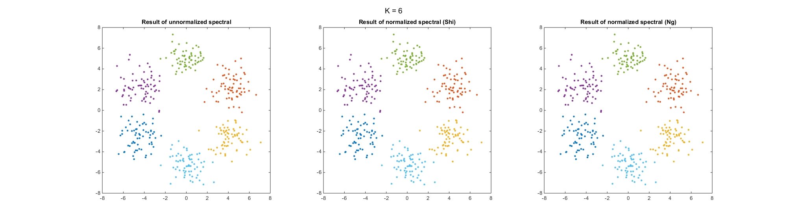
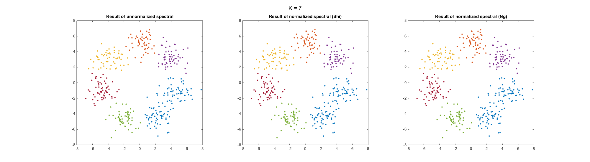
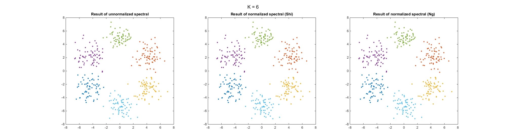
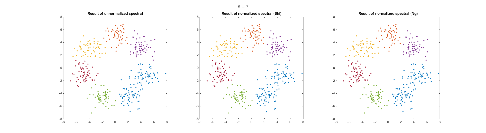
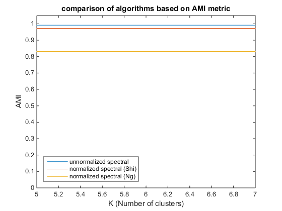

Evaluation Spectral Clustering Algorithms
Vahid Bastani - Sep. 2015
Evaluation of spectral clustering algorithms including unnormalized spectral clustering [1], normalized spectral clustering according to [2] and normalized spectral clustering according to [3].
Contents
In each iteration a set of random data are generated using K number of 2-D Gaussian distribution with identity covariance matrix. Centers of Gaussians are placed uniformly around a circle of radios r=5. Each Gaussian represents a cluster. In each iteration the number of clusters increased by one and clustering algorithms are applied on the data.
addpath('./../Spectral') % add clustering classes library addpath('./../SimilarityFunctions') % add similarity function library addpath('./../ExternalLibs') % add third-party library clear, clc, close all % clear workspace r = 5; % radios of circle N_t = 400; % total number of points min_K = 5; % maximum number of clusters max_K = 7; % maximum number of clusters for K=min_K:max_K
Data Generation
Number of points in each cluster
N = floor(N_t/K);
Find the mean of clusters , 
for i=1:K cluster_mean(i,:) = [r*sin(2*pi/K*i), r*cos(2*pi/K*i)]; end
Generate data
kindx = K-min_K+1; % index of dataset for k=1:K % for each cluster for i=1:1:N % for each point n = (k-1)*N+i; % a cumulative index % sample a data point from Gaussian distribution % each data is put in a cell of cell array data{kindx}{n} = mvnrnd(cluster_mean(k,:), eye(2)); pdata{kindx}(n,:) = data{kindx}{n}; % for plot purposes % keep the ground-truth of cluster labels for comparison ground_truth{kindx}(n,:) = k; end end
plotting generated data
plot(pdata{kindx}(:,1),pdata{kindx}(:,2),'.k')
title(['generated data for K = ' num2str(K)] )
xlim([-8 8]);
ylim([-8 8]);
snapnow();
clear cluster_mean
   end
Clustering Algorithms
Making a cell array enumerating the type of clustering algorithms. This is used in makeClustring function to retrieve object of corresponding clustering algorithm.
algorithms = {...
'unnormalized spectral' ...
'normalized spectral (Shi)' ...
'normalized spectral (Ng)'
};
Clustering algorithms are applied on each of datasets
for K=min_K:max_K kindx = K-min_K+1; % index of dataset % for each algorithm for a=1:length(algorithms)
make algorithm object
clustering_algo = ... makeClustring(algorithms{a},K,@gaussianSim2D); % run the algorithm result = clustering_algo.cluster(data{kindx}); % retrive the results idx{kindx} = clustering_algo.getResultIdx();
Calculating Adjacent mutual information (AMI) [4] metric for each result
ami_metric(kindx,a) = ami(result,ground_truth{kindx});
end end
Results
This section the results f clustering algorithms are shown and compared based on AMI metric.
plotting clusters
fig = figure('Visible','off', 'Position', [1,1,2000,550]); for K=min_K:max_K kindx = K-min_K+1; % index of dataset % for each algorithm for a=1:length(algorithms) % plot data with clusters coloring subplot(1,3,a) colors = lines(K); % color values for clusters for k=1:K plot(pdata{kindx}(idx{kindx}{k},1),... pdata{kindx}(idx{kindx}{k},2),'.',... 'Color', colors(k,:),... 'MarkerSize', 10); hold on end title(['Result of ' algorithms{a}]) xlim([-8 8]); ylim([-8 8]); hold off end suptitle(['K = ' num2str(K)]) set(fig,'Visible','on') snapnow(); set(fig,'Visible','off') end delete(fig)
  
  plotting AMI
figure plot(min_K:max_K,ami_metric') ylim([0 1.05]); xlabel('K (Number of clusters)') ylabel('AMI') legend(algorithms, 'Location','southwest') title('comparison of algorithms based on AMI metric')
References
[1] Luxburg, U. (2007). A tutorial on spectral clustering. Statistics and Computing, 17(4), 395–416.
[2] SHi, J., & Malik, J. (2000). Normalized cuts and image segmentation. IEEE Transactions on Pattern Analysis and Machine Intelligence, 22(8), 888–905.
[3] Ng, A. Y., Jordan, M. I., & Weiss, Y. (2002). On Spectral Clustering: Analysis and an algorithm. In Advances in Neural Information Processing Systems (pp. 849–856).
[4] Vinh, N. X., Epps, J., & Bailey, J. (2010). Information Theoretic Measures for Clusterings Comparison: Variants, Properties, Normalization and Correction for Chance. The Journal of Machine Learning Research, 11, 2837–2854.